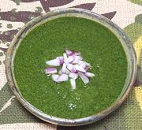

|
Mojo VerdeCaribbean / South America / Canary Islands - Mojo Verde | ||||
| Makes: Effort: Sched: DoAhead: |
1 cup ** 25 min Yes |
This sauce / dip (pronounced "moho") originated in the Spanish Canary Islands, but version like this one are now popular all through the Caribbean and South America. | |||
|
|
1 4 1 1/2 3 1/2 1 1/3 |
c cl t T c T t |
Cilantro (1) Garlic Chili Serrano Cumin Seed Lime Juice Olive Oil, ExtV Wine Vinegar, white Salt |
Make - (25 min - mostly for pulling cilantro leaves)
|